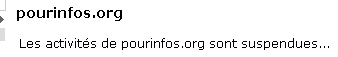

15/12/2009
Le bleu « Mn-YIn »
Annonce trop enthousiaste ou véritable découverte ?
Quelques mots sur un « nouveau bleu » qui laisse perplexe.
Cliquer ici.
26/11/2009
La presse artistique vue
du web
Cette page a été entièrement mise à jour.
Elle n'entend pas constituer une revue exhaustive mais dresse une sorte
d'état des lieux (voir édito). Rien de péremptoire ni de définitif.
Réactions bienvenues.
Cliquer ici
23/11/2009
Pub : une expérience
inédite
Ces prochains jours (à partir du 24), nous
expérimenterons avec Direct Beaux-arts un type de "positionnement" (à
défaut d'autre mot) qui se veut utile. Simplement, sur une très petite
partie du site, douze pages, les visuels publicitaires ne seront pas les
mêmes en fonction des articles que vous lirez.
Aucun robot ou automatisme derrière. Ce sont
des choix directs réfléchis et une expérience tout à
fait inédite dans ce domaine. Quelque chose de plus humain que la
publicité Google.
Sont concernés les thèmes
Auxiliaires huiles, Acrylique et Dessin, soit
les pages suivantes :
*
Essences,
Térébenthine,
Huiles,
Huile de lin,
Huile d'oeillette,
Médiums pour
l'huile,
*
Acrylique,
Produits acryliques,
Médiums
acryliques,
*
Procédés de dessin,
Crayons,
Académies.
7/11/2009
PourInfos.org, c'est
terminé
6 000 courriels envoyés à des professionnels
deux fois par semaine pendant huit ans, relayés par un site bien connu
pour sa rigueur et son utilité, des centaines d'offres d'emploi, appels à
candidature, à résidence, appels d'offre, annonces événementielles dûment
sélectionnées... voilà ce que nous ne verrons plus.

Par "suspendues", renseignement pris, il
faut bel et bien entendre un euphémisme. Xavier, l'éditeur de ce site, a
dû rendre les armes après des années de recherche d'aides publiques ou
privées et d'expérimentation de solutions avérées peu satisfaisantes avec
des stagiaires.
La tentative du CNAP (Centre National des
Arts Plastiques) de constituer une activité web partiellement semblable (lien)
fait pâle figure en face de la foisonnante pleine page efficacement
organisée autour d'un calendrier clair que nous offrait PourInfos. Et
nulle trace de mailing-list dans cette initiative.
Pourquoi tenter de réinventer la poudre
plutôt que prendre au sérieux des acteurs web expérimentés et reconnus, à
l'heure où l'emploi bat de l'aile ?
5/11/2009
Arts plastiques et
magnétisme